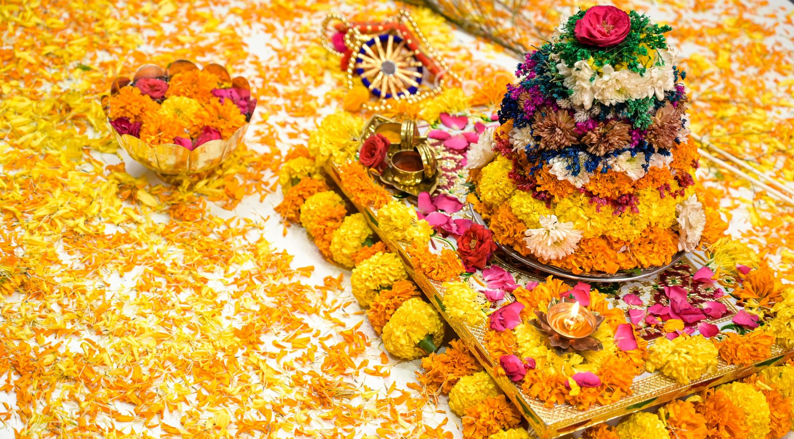

Start with the space.
Give yourself a small, level area to work in. Sweep away dust and make sure the surface is dry. For a first attempt, a simple open pattern is easier to understand than a very intricate design.
Leave walking space around the pattern and choose a position where you can lift the stencil without reaching awkwardly. Work away from strong drafts that may move fine powder.
Prepare your materials.
Keep the stencil, a little fine rangoli powder and a small sieve within reach. Begin with one colour so you can focus on placement and lifting. Test a tiny area first if you are unsure whether a powder will stain your floor.

Let the pattern emerge.
Place the stencil flat. Sift a light, even layer over the openings instead of pouring a large amount at once. Check the edges before lifting and remove extra powder gently if your maker’s instructions allow.
Lift the stencil straight up with steady hands. The first result may have a few soft edges. Treat it as practice rather than a test. Each attempt helps you understand the material and movement.
Finish with your own touch.
A few petals, a simple border or a second colour can make the design yours. Keep lamps stable, away from fabrics and clear of walking routes. Brush the stencil dry and store it flat for the next time.
Keep learning the tradition.
Kolam is more than an outline. Look for teaching by practitioners, learn the names of different styles and respect the context of a motif. A stencil can be a starting point for curiosity, not a substitute for that wider craft.